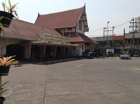

Vous souhaitez voir l'image dans sa taille d'origine ? Cliquez dessus !
Si jamais, vous voulez un drapeau du Japon, c'est là :)
Je suis parti au Japon en 2014, c'était génial.
J'ai travaillé dans plusieurs restaurants grâce à l'obtention d'un PVT(Permis-Vacances-Travail)
Si vous voulez aller directement au Départ, c'est ici mais d'abord, je vais procéder par étape, si vous le voulez bien, histoire de se mettre dans l'ambiance :)
{kind=link}
L'obtention du PVT
Marseille 2013, je prépare mon dossier pour obtenir mon PVT, sésame qui me permettra de réaliser mon rêve, celui d'aller travailler au Japon.
Je me rends au consulat du Japon pour remplir un dossier d'obtention du PVT. Ils me demandent pas mal d'informations, comme les endroits où je vais loger, mon budget, ce que je compte faire une fois sur place, mon métier...
Il faut réunir plusieurs documents comme:
- Passeport
- Relevés de compte
- Formulaire de demande de visa
- Photo d'identité
- Lettre de motivation
- Etc...
Voici un lien qui vous permettra d'en apprendre plus sur le PVT pvtistes.net
N'hésitez pas à le consulter!
Si vous avez des questions, je peux éventuellement vous renseigner par mail à l'adresse suivante : kat.ri@sfr.fr
Une fois tous ces documents réunis, mon plan de route effectué, je me rend de nouveau au Consulat du Japon qui me précise qu'il faut environ 2 semaines pour obtenir le Précieux.
5 jours plus tard, quelle ne fut pas ma surprise lorsque je reçoit un coup de téléphone qui me dit que mon PVT est arrivé ! J'ouvre mon passeport fébrilement et découvre le Visa. À partir de la date d'obtention, j'ai 1 an pour débarquer au Japon...
Préparation avant de partir
Avant de partir, je décide de repartir quelques mois à Londres, histoire de voir si mon anglais n'est pas trop rouillé car j'ai le sentiment que j'en aurai besoin...
Je repars donc et avec la chance insolente qui me caractérise, je retrouve du travail dans le même restaurant où j'avais travaillé quelques années auparavant. Seulement, et à ma grande déception, l'ambiance qui m'avait fait adorer cet endroit à l'époque n'est plus du tout la même ! Je décide donc de ne pas m'attarder et me met en quête d'un autre travail que je retrouve très rapidemment. Eh oui, avant ce satané Covid, il n'y avait aucune difficulté à trouver un emploi dans la restauration et vous en aurez la preuve également un peu plus tard.
Je trouve un emploi dans un restaurant nommé le "Duck&Waffle", magnifique restaurant perché au 38ème étage de la Heron Tower située à 2 pas de la bouche de métro Liverpool Street.
Restaurant ouvert H24, il y a 3 équipes, matin, nuit et soir, j'avais postulé pour l'équipe du matin évidemment tant les horaires était avantageux. Vous imaginez, vous, en tant que cuisinier, travailler de 7h du matin à 16h de l'après-midi avec 2 jours de congé par semaines; le rêve ! J'aurai pu passer ma vie au Duck&Waffle, seulement voilà, l'appel du Japon toujours plus pressant, toujours cette petite voix dans ma tête qui me dit: c'est là-bas que tu dois aller !
Le Départ(Enfin presque)
Et voilà, je décide enfin de partir! Il s'est passé plus de 6 mois depuis l'obtention du PVT et je me décide à partir, enfin presque car sur les conseils de mon pére, qui me dit : "Tu devrais prendre des vacances, pourquoi pas la Thaïlande?" et moi de me dire, ah tiens c'est une bonne idée, allez hop ! Thaïlande me voilà ! Surtout que je n'étais vraiment parti en vacances et encore moins aussi loin !
Quel endroit merveilleux que la Thaïlande, je vous en parle ici.
Le Départ(pour de bon cette fois)
Première journée au Japon
Ma première journée fut inoubliable. En effet, n'ayant pas beaucoup dormi la veille et fêté mon départ comme ils se doit, je n'ai pas énormémemnt prêté attention à ce qu'il se passait autour de moi. Quelle ne fût pas mon erreur !
Je suis parti de Chiang Maï, la ville que je préfère en Thaïlande, il y faisait 38°C à l'ombre, en plein mois de mars, vous imaginez ?

Je saute dans le train, 12h plus tard, j'arrive à Bangkok et prends l'avion pour Tokyo. Je dors comme une souche durant le trajet et me réveille seulement à l'atterissage, pas bien réveillé, je sors de l'avion en jean, basket, t-shirt, normal, il faisait tellement à Chiang Maï et là... Il neige ! Je vous avoue que je n'en menais pas large. 😳
Pour une raison que j'ai oublié, je décide d'aller dans le quartier de Ginza. La première boutique qui a éveillé mon intérêt fut H&M ! Je ressors avec une veste, un bonnet, des gants... Ouf, sauvé, enfin, c'est ce que je croyais 😅
{kind=link}